import numpy as np
import os
import json
import random
import torch
import torchvision
import torch.nn as nn
import pandas as pd
import torch.nn.functional as F
import torch.optim as optim
import matplotlib.pyplot as plt
from matplotlib.image import imread
# !pip install -U --no-cache-dir gdown --preConformal Prediction
Why use conformal prediction?
Guess the following images:
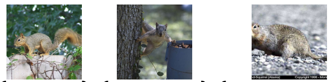
Prediction set generated by conformal prediction for the images:
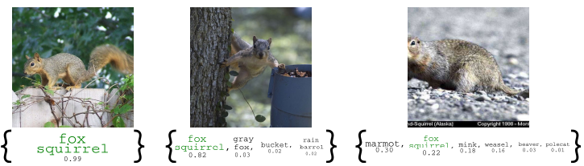
Aim
Using conformal prediction we aim to generate rigorous, finite sample confidence intervals for any model and any dataset. Unlike a point prediction from neural network, here we will get a confidence interval in which desired output is guaranteed to be.
Outline
- Begin with a fitted predicted model which we call \(\hat{f}\).
- Create a predicted set (set of possible labels) for this model using a small amount of calibration data.
Details of the method
Given
A calibration dataset \(\{(x_i,y_i)\}_{i=1}^n\) (This is the dataset that the model does not see during training).
A \(model\) \(\hat{\pi}(x) = P[Y=y|X=x]\)
A \(new\) \(data\) \(point\) \(x_{n+1}\) to test the model
Goal
Predict a set \(\tau(X_{test})\) for the data point \(X_{test}\) that is a subset of the label space \(i.e.\) predict a set, \(\tau(X_{test}) \subseteq y\). This set should contain the true class \(Y_{test}\) and should be valid in the following sense:
$ 1 - P[Y_{test} (X_{test})] - + $
here \(\alpha\) is a user chosen rate in \(\in [0,1]\), \(y\) is the set of all labels & \(n\) is the number of points in calibration dataset. The above mentioned property is called Marginal Coverage.
Objective for the sets
Exact coverage
Small size
Size of the set should indicate the difficulty of the examples \(i.e.\) Adaptivity
General Method for Conformal Prediction
Identify a heuristic notion of uncertainity
Define a score function \(S(x,y)\) based on the values in step 1. In general large values of \(S\) corresponds to a bad fit between \(x\) \(\&\) \(y\)
Compute \(\hat{q} : \frac{\lceil{(n+1)(1-\alpha)}\rceil}{n}\) quantile of \(S(x,y)\) on calibration dataset
To obtain the prediction set: \(\tau(x) = \{y:S(x,y) \le \hat{q} \}\)
Implementing classification model for MNIST dataset
n_epochs = 2
batch_size_train = 64
batch_size_test = 1000
learning_rate = 0.01
momentum = 0.5
log_interval = 10
random_seed = 1
torch.backends.cudnn.enabled = False
torch.manual_seed(random_seed)<torch._C.Generator at 0x7f36391523f0>train_loader = torch.utils.data.DataLoader(
torchvision.datasets.MNIST(
"dataset/",
train=True,
download=True,
transform=torchvision.transforms.Compose(
[
torchvision.transforms.ToTensor(),
torchvision.transforms.Normalize((0.1307,), (0.3081,)),
]
),
),
batch_size=batch_size_train,
shuffle=True,
)
full_test = torchvision.datasets.MNIST(
root="dataset/",
train=False,
download=True,
transform=torchvision.transforms.Compose(
[
torchvision.transforms.ToTensor(),
torchvision.transforms.Normalize((0.1307,), (0.3081,)),
]
),
)
# Get the number of samples in the full dataset
num_samples = len(full_test)
# Split the dataset into two parts: test set and calibration set
test_size = num_samples // 2
calibration_size = num_samples - test_size
test_dataset, calibration_dataset = torch.utils.data.random_split(
full_test, [test_size, calibration_size]
)
# Create the test and calibration loaders
test_loader = torch.utils.data.DataLoader(
test_dataset, batch_size=5 * batch_size_test, shuffle=True
)
calibration_loader = torch.utils.data.DataLoader(
calibration_dataset, batch_size=5 * batch_size_test, shuffle=True
)target_values = []
for input_data, targets in train_loader:
target_values.extend(targets.tolist())
target_values = np.array(target_values)fig, ax = plt.subplots(figsize=(10, 6))
ax.hist(target_values, color="skyblue", edgecolor="black", linewidth=1.2)
ax.set_xlabel("Target values")
ax.set_ylabel("Frequency")
ax.set_title("Histogram of Target values for Training set")
plt.show()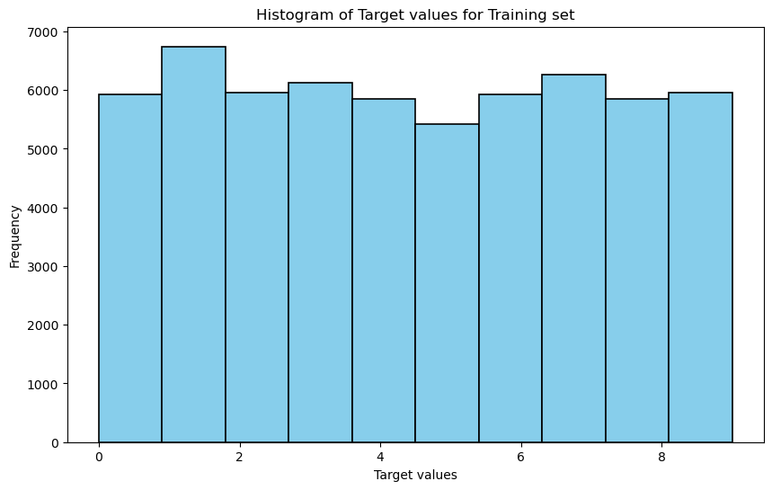
examples = enumerate(test_loader)
batch_idx, (example_data, example_targets) = next(examples)
print(batch_idx)
fig = plt.figure()
for i in range(6):
plt.subplot(2, 3, i + 1)
plt.tight_layout()
plt.imshow(example_data[i][0], cmap="gray", interpolation="none")
plt.title("Ground Truth: {}".format(example_targets[i]))
plt.xticks([])
plt.yticks([])0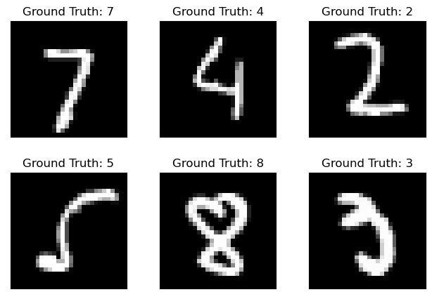
class Net(nn.Module):
def __init__(self):
super(Net, self).__init__()
self.conv1 = nn.Conv2d(1, 10, kernel_size=5)
self.conv2 = nn.Conv2d(10, 20, kernel_size=5)
self.conv2_drop = nn.Dropout2d()
self.fc1 = nn.Linear(320, 50)
self.fc2 = nn.Linear(50, 10)
def forward(self, x):
x = F.relu(F.max_pool2d(self.conv1(x), 2))
x = F.relu(F.max_pool2d(self.conv2_drop(self.conv2(x)), 2))
x = x.view(-1, 320)
x = F.relu(self.fc1(x))
x = F.dropout(x, training=self.training)
x = self.fc2(x)
return F.softmax(x, dim=1)network = Net()
optimizer = optim.SGD(network.parameters(), lr=learning_rate, momentum=momentum)train_losses = []
train_counter = []
test_losses = []
test_counter = []criterion = nn.CrossEntropyLoss()def train(epoch):
network.train()
for batch_idx, (data, target) in enumerate(train_loader):
optimizer.zero_grad()
output = network(data)
loss = F.nll_loss(output, target)
loss.backward()
optimizer.step()
if batch_idx % log_interval == 0:
print(
"Train Epoch: {} [{}/{} ({:.0f}%)]\tLoss: {:.6f}".format(
epoch,
batch_idx * len(data),
len(train_loader.dataset),
100.0 * batch_idx / len(train_loader),
loss.item(),
)
)
# train_losses.append(loss.item())
# train_counter.append(
# (batch_idx*64) + ((epoch-1)*len(train_loader.dataset)))
torch.save(network.state_dict(), "results/model.pth")
torch.save(optimizer.state_dict(), "results/optimizer.pth")
train_losses.append(loss.item())
train_counter.append(epoch)def test(epoch):
network.eval()
test_loss = 0
correct = 0
with torch.no_grad():
for data, target in test_loader:
output = network(data)
test_loss += F.nll_loss(output, target, reduction="sum").item()
pred = output.data.max(1, keepdim=True)[1]
correct += pred.eq(target.data.view_as(pred)).sum()
test_loss /= len(test_loader.dataset)
test_losses.append(test_loss)
test_counter.append(epoch)
print(
"\nTest set: Avg. loss: {:.4f}, Accuracy: {}/{} ({:.0f}%)\n".format(
test_loss,
correct,
len(test_loader.dataset),
100.0 * correct / len(test_loader.dataset),
)
)for epoch in range(1, n_epochs + 1):
train(epoch)
test(epoch)Train Epoch: 1 [0/60000 (0%)] Loss: -0.096270
Train Epoch: 1 [640/60000 (1%)] Loss: -0.101968
Train Epoch: 1 [1280/60000 (2%)] Loss: -0.094875
Train Epoch: 1 [1920/60000 (3%)] Loss: -0.096943
Train Epoch: 1 [2560/60000 (4%)] Loss: -0.100370
Train Epoch: 1 [3200/60000 (5%)] Loss: -0.106169
Train Epoch: 1 [3840/60000 (6%)] Loss: -0.095606
Train Epoch: 1 [4480/60000 (7%)] Loss: -0.100021
Train Epoch: 1 [5120/60000 (9%)] Loss: -0.097964
Train Epoch: 1 [5760/60000 (10%)] Loss: -0.105364
Train Epoch: 1 [6400/60000 (11%)] Loss: -0.099801
Train Epoch: 1 [7040/60000 (12%)] Loss: -0.104224
Train Epoch: 1 [7680/60000 (13%)] Loss: -0.102671
Train Epoch: 1 [8320/60000 (14%)] Loss: -0.102677
Train Epoch: 1 [8960/60000 (15%)] Loss: -0.098862
Train Epoch: 1 [9600/60000 (16%)] Loss: -0.104594
Train Epoch: 1 [10240/60000 (17%)] Loss: -0.107961
Train Epoch: 1 [10880/60000 (18%)] Loss: -0.101030
Train Epoch: 1 [11520/60000 (19%)] Loss: -0.106397
Train Epoch: 1 [12160/60000 (20%)] Loss: -0.105689
Train Epoch: 1 [12800/60000 (21%)] Loss: -0.101100
Train Epoch: 1 [13440/60000 (22%)] Loss: -0.099717
Train Epoch: 1 [14080/60000 (23%)] Loss: -0.110008
Train Epoch: 1 [14720/60000 (25%)] Loss: -0.107806
Train Epoch: 1 [15360/60000 (26%)] Loss: -0.106625
Train Epoch: 1 [16000/60000 (27%)] Loss: -0.104545
Train Epoch: 1 [16640/60000 (28%)] Loss: -0.110616
Train Epoch: 1 [17280/60000 (29%)] Loss: -0.108283
Train Epoch: 1 [17920/60000 (30%)] Loss: -0.108704
Train Epoch: 1 [18560/60000 (31%)] Loss: -0.114978
Train Epoch: 1 [19200/60000 (32%)] Loss: -0.118148
Train Epoch: 1 [19840/60000 (33%)] Loss: -0.119028
Train Epoch: 1 [20480/60000 (34%)] Loss: -0.116415
Train Epoch: 1 [21120/60000 (35%)] Loss: -0.116105
Train Epoch: 1 [21760/60000 (36%)] Loss: -0.118710
Train Epoch: 1 [22400/60000 (37%)] Loss: -0.121168
Train Epoch: 1 [23040/60000 (38%)] Loss: -0.123993
Train Epoch: 1 [23680/60000 (39%)] Loss: -0.115344
Train Epoch: 1 [24320/60000 (41%)] Loss: -0.124260
Train Epoch: 1 [24960/60000 (42%)] Loss: -0.109251
Train Epoch: 1 [25600/60000 (43%)] Loss: -0.130309
Train Epoch: 1 [26240/60000 (44%)] Loss: -0.113852
Train Epoch: 1 [26880/60000 (45%)] Loss: -0.135410
Train Epoch: 1 [27520/60000 (46%)] Loss: -0.123541
Train Epoch: 1 [28160/60000 (47%)] Loss: -0.138047
Train Epoch: 1 [28800/60000 (48%)] Loss: -0.171173
Train Epoch: 1 [29440/60000 (49%)] Loss: -0.141748
Train Epoch: 1 [30080/60000 (50%)] Loss: -0.136376
Train Epoch: 1 [30720/60000 (51%)] Loss: -0.167414
Train Epoch: 1 [31360/60000 (52%)] Loss: -0.209505
Train Epoch: 1 [32000/60000 (53%)] Loss: -0.170585
Train Epoch: 1 [32640/60000 (54%)] Loss: -0.152469
Train Epoch: 1 [33280/60000 (55%)] Loss: -0.183759
Train Epoch: 1 [33920/60000 (57%)] Loss: -0.205033
Train Epoch: 1 [34560/60000 (58%)] Loss: -0.190846
Train Epoch: 1 [35200/60000 (59%)] Loss: -0.203513
Train Epoch: 1 [35840/60000 (60%)] Loss: -0.193385
Train Epoch: 1 [36480/60000 (61%)] Loss: -0.236351
Train Epoch: 1 [37120/60000 (62%)] Loss: -0.300120
Train Epoch: 1 [37760/60000 (63%)] Loss: -0.258446
Train Epoch: 1 [38400/60000 (64%)] Loss: -0.298882
Train Epoch: 1 [39040/60000 (65%)] Loss: -0.224463
Train Epoch: 1 [39680/60000 (66%)] Loss: -0.239283
Train Epoch: 1 [40320/60000 (67%)] Loss: -0.320215
Train Epoch: 1 [40960/60000 (68%)] Loss: -0.271330
Train Epoch: 1 [41600/60000 (69%)] Loss: -0.218053
Train Epoch: 1 [42240/60000 (70%)] Loss: -0.336276
Train Epoch: 1 [42880/60000 (71%)] Loss: -0.423247
Train Epoch: 1 [43520/60000 (72%)] Loss: -0.340593
Train Epoch: 1 [44160/60000 (74%)] Loss: -0.349698
Train Epoch: 1 [44800/60000 (75%)] Loss: -0.343172
Train Epoch: 1 [45440/60000 (76%)] Loss: -0.365741
Train Epoch: 1 [46080/60000 (77%)] Loss: -0.336732
Train Epoch: 1 [46720/60000 (78%)] Loss: -0.356187
Train Epoch: 1 [47360/60000 (79%)] Loss: -0.365025
Train Epoch: 1 [48000/60000 (80%)] Loss: -0.285388
Train Epoch: 1 [48640/60000 (81%)] Loss: -0.404647
Train Epoch: 1 [49280/60000 (82%)] Loss: -0.481464
Train Epoch: 1 [49920/60000 (83%)] Loss: -0.454246
Train Epoch: 1 [50560/60000 (84%)] Loss: -0.461179
Train Epoch: 1 [51200/60000 (85%)] Loss: -0.424522
Train Epoch: 1 [51840/60000 (86%)] Loss: -0.476232
Train Epoch: 1 [52480/60000 (87%)] Loss: -0.483999
Train Epoch: 1 [53120/60000 (88%)] Loss: -0.512280
Train Epoch: 1 [53760/60000 (90%)] Loss: -0.485575
Train Epoch: 1 [54400/60000 (91%)] Loss: -0.550330
Train Epoch: 1 [55040/60000 (92%)] Loss: -0.507828
Train Epoch: 1 [55680/60000 (93%)] Loss: -0.408248
Train Epoch: 1 [56320/60000 (94%)] Loss: -0.482777
Train Epoch: 1 [56960/60000 (95%)] Loss: -0.490255
Train Epoch: 1 [57600/60000 (96%)] Loss: -0.510454
Train Epoch: 1 [58240/60000 (97%)] Loss: -0.533454
Train Epoch: 1 [58880/60000 (98%)] Loss: -0.451538
Train Epoch: 1 [59520/60000 (99%)] Loss: -0.503178
Test set: Avg. loss: -0.6431, Accuracy: 3458/5000 (69%)
Train Epoch: 2 [0/60000 (0%)] Loss: -0.543103
Train Epoch: 2 [640/60000 (1%)] Loss: -0.487201
Train Epoch: 2 [1280/60000 (2%)] Loss: -0.560745
Train Epoch: 2 [1920/60000 (3%)] Loss: -0.614560
Train Epoch: 2 [2560/60000 (4%)] Loss: -0.481817
Train Epoch: 2 [3200/60000 (5%)] Loss: -0.541968
Train Epoch: 2 [3840/60000 (6%)] Loss: -0.563525
Train Epoch: 2 [4480/60000 (7%)] Loss: -0.610633
Train Epoch: 2 [5120/60000 (9%)] Loss: -0.512815
Train Epoch: 2 [5760/60000 (10%)] Loss: -0.526713
Train Epoch: 2 [6400/60000 (11%)] Loss: -0.602760
Train Epoch: 2 [7040/60000 (12%)] Loss: -0.576782
Train Epoch: 2 [7680/60000 (13%)] Loss: -0.621671
Train Epoch: 2 [8320/60000 (14%)] Loss: -0.559132
Train Epoch: 2 [8960/60000 (15%)] Loss: -0.628107
Train Epoch: 2 [9600/60000 (16%)] Loss: -0.512339
Train Epoch: 2 [10240/60000 (17%)] Loss: -0.566718
Train Epoch: 2 [10880/60000 (18%)] Loss: -0.511051
Train Epoch: 2 [11520/60000 (19%)] Loss: -0.647878
Train Epoch: 2 [12160/60000 (20%)] Loss: -0.557889
Train Epoch: 2 [12800/60000 (21%)] Loss: -0.519488
Train Epoch: 2 [13440/60000 (22%)] Loss: -0.590033
Train Epoch: 2 [14080/60000 (23%)] Loss: -0.649739
Train Epoch: 2 [14720/60000 (25%)] Loss: -0.620025
Train Epoch: 2 [15360/60000 (26%)] Loss: -0.593018
Train Epoch: 2 [16000/60000 (27%)] Loss: -0.595310
Train Epoch: 2 [16640/60000 (28%)] Loss: -0.616386
Train Epoch: 2 [17280/60000 (29%)] Loss: -0.613914
Train Epoch: 2 [17920/60000 (30%)] Loss: -0.654145
Train Epoch: 2 [18560/60000 (31%)] Loss: -0.738744
Train Epoch: 2 [19200/60000 (32%)] Loss: -0.643044
Train Epoch: 2 [19840/60000 (33%)] Loss: -0.649137
Train Epoch: 2 [20480/60000 (34%)] Loss: -0.692642
Train Epoch: 2 [21120/60000 (35%)] Loss: -0.633675
Train Epoch: 2 [21760/60000 (36%)] Loss: -0.687573
Train Epoch: 2 [22400/60000 (37%)] Loss: -0.701991
Train Epoch: 2 [23040/60000 (38%)] Loss: -0.645086
Train Epoch: 2 [23680/60000 (39%)] Loss: -0.692898
Train Epoch: 2 [24320/60000 (41%)] Loss: -0.577617
Train Epoch: 2 [24960/60000 (42%)] Loss: -0.683858
Train Epoch: 2 [25600/60000 (43%)] Loss: -0.683304
Train Epoch: 2 [26240/60000 (44%)] Loss: -0.557712
Train Epoch: 2 [26880/60000 (45%)] Loss: -0.641402
Train Epoch: 2 [27520/60000 (46%)] Loss: -0.574060
Train Epoch: 2 [28160/60000 (47%)] Loss: -0.618113
Train Epoch: 2 [28800/60000 (48%)] Loss: -0.625470
Train Epoch: 2 [29440/60000 (49%)] Loss: -0.632310
Train Epoch: 2 [30080/60000 (50%)] Loss: -0.784766
Train Epoch: 2 [30720/60000 (51%)] Loss: -0.694353
Train Epoch: 2 [31360/60000 (52%)] Loss: -0.620910
Train Epoch: 2 [32000/60000 (53%)] Loss: -0.655771
Train Epoch: 2 [32640/60000 (54%)] Loss: -0.673174
Train Epoch: 2 [33280/60000 (55%)] Loss: -0.736954
Train Epoch: 2 [33920/60000 (57%)] Loss: -0.608999
Train Epoch: 2 [34560/60000 (58%)] Loss: -0.655900
Train Epoch: 2 [35200/60000 (59%)] Loss: -0.704720
Train Epoch: 2 [35840/60000 (60%)] Loss: -0.788156
Train Epoch: 2 [36480/60000 (61%)] Loss: -0.608460
Train Epoch: 2 [37120/60000 (62%)] Loss: -0.683782
Train Epoch: 2 [37760/60000 (63%)] Loss: -0.653793
Train Epoch: 2 [38400/60000 (64%)] Loss: -0.651975
Train Epoch: 2 [39040/60000 (65%)] Loss: -0.591193
Train Epoch: 2 [39680/60000 (66%)] Loss: -0.620627
Train Epoch: 2 [40320/60000 (67%)] Loss: -0.690345
Train Epoch: 2 [40960/60000 (68%)] Loss: -0.677097
Train Epoch: 2 [41600/60000 (69%)] Loss: -0.784562
Train Epoch: 2 [42240/60000 (70%)] Loss: -0.723095
Train Epoch: 2 [42880/60000 (71%)] Loss: -0.725503
Train Epoch: 2 [43520/60000 (72%)] Loss: -0.699448
Train Epoch: 2 [44160/60000 (74%)] Loss: -0.669538
Train Epoch: 2 [44800/60000 (75%)] Loss: -0.693109
Train Epoch: 2 [45440/60000 (76%)] Loss: -0.741334
Train Epoch: 2 [46080/60000 (77%)] Loss: -0.571799
Train Epoch: 2 [46720/60000 (78%)] Loss: -0.716431
Train Epoch: 2 [47360/60000 (79%)] Loss: -0.754320
Train Epoch: 2 [48000/60000 (80%)] Loss: -0.678586
Train Epoch: 2 [48640/60000 (81%)] Loss: -0.689286
Train Epoch: 2 [49280/60000 (82%)] Loss: -0.685702
Train Epoch: 2 [49920/60000 (83%)] Loss: -0.721305
Train Epoch: 2 [50560/60000 (84%)] Loss: -0.697595
Train Epoch: 2 [51200/60000 (85%)] Loss: -0.702736
Train Epoch: 2 [51840/60000 (86%)] Loss: -0.670738
Train Epoch: 2 [52480/60000 (87%)] Loss: -0.723802
Train Epoch: 2 [53120/60000 (88%)] Loss: -0.799761
Train Epoch: 2 [53760/60000 (90%)] Loss: -0.741606
Train Epoch: 2 [54400/60000 (91%)] Loss: -0.786890
Train Epoch: 2 [55040/60000 (92%)] Loss: -0.647488
Train Epoch: 2 [55680/60000 (93%)] Loss: -0.696402
Train Epoch: 2 [56320/60000 (94%)] Loss: -0.749985
Train Epoch: 2 [56960/60000 (95%)] Loss: -0.687131
Train Epoch: 2 [57600/60000 (96%)] Loss: -0.608526
Train Epoch: 2 [58240/60000 (97%)] Loss: -0.721615
Train Epoch: 2 [58880/60000 (98%)] Loss: -0.797107
Train Epoch: 2 [59520/60000 (99%)] Loss: -0.692595
Test set: Avg. loss: -0.8125, Accuracy: 4096/5000 (82%)
len(test_counter), len(test_losses)(2, 2)fig = plt.figure()
plt.plot(train_counter, np.exp(train_losses), color="blue")
plt.plot(test_counter, np.exp(test_losses), color="red")
plt.legend(["Train Loss", "Test Loss"], loc="upper right")
plt.xlabel("epochs")
plt.ylabel("Loss")Text(0, 0.5, 'Loss')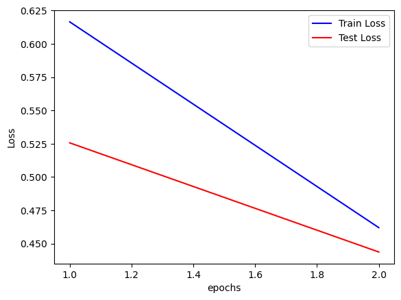
with torch.no_grad():
output = network(example_data)
fig = plt.figure()
for i in range(6):
plt.subplot(2, 3, i + 1)
plt.tight_layout()
plt.imshow(example_data[i][0], cmap="gray", interpolation="none")
plt.title("Prediction: {}".format(output.data.max(1, keepdim=True)[1][i].item()))
plt.xticks([])
plt.yticks([])calib_prediction_results = np.array([])
calib_target_results = np.array([])
network.eval()
for data, target in calibration_loader:
output = network(data)
calib_prediction_results = output.data
calib_target_results = target.datatest_prediction_results = np.array([])
test_target_results = np.array([])
test_images = np.array([])
network.eval()
for data, target in test_loader:
output = network(data)
test_images = data
test_prediction_results = output.data
test_target_results = target.dataNow Lets’ implement conformal Prediction
A simpler version of the conformal prediction
Compute \(\hat{q} : \alpha\) quantile of \(S(x,y)\) on calibration dataset where \(S(x,y)\) is the score function correspoding to the true label
To obtain the prediction set: \(\tau(x) = \{y:S(x,y) \ge \hat{q} \}\)
calib_target_results = np.array(calib_target_results)
calib_prediction_results = np.array(calib_prediction_results)
test_prediction_results = np.array(test_prediction_results)
test_target_results = np.array(test_target_results)
calib_prediction_results.shape, calib_target_results.shape, test_prediction_results.shape, test_target_results.shape((5000, 10), (5000,), (5000, 10), (5000,))calib_df = pd.DataFrame(calib_prediction_results)
calib_df["Max"] = calib_df.max(axis=1)
calib_df["Max_idx"] = calib_df.idxmax(axis=1)
calib_df["True_idx"] = calib_target_results
calib_df| 0 | 1 | 2 | 3 | 4 | 5 | 6 | 7 | 8 | 9 | Max | Max_idx | True_idx | |
|---|---|---|---|---|---|---|---|---|---|---|---|---|---|
| 0 | 7.672552e-08 | 5.311417e-07 | 1.562821e-04 | 3.211690e-09 | 4.822823e-04 | 2.262360e-06 | 9.993560e-01 | 3.220139e-11 | 1.609646e-06 | 9.680530e-07 | 0.999356 | 6 | 6 |
| 1 | 7.041307e-08 | 1.779545e-07 | 6.658971e-06 | 4.084817e-07 | 6.008969e-08 | 1.122653e-08 | 1.417746e-04 | 1.310595e-09 | 9.998498e-01 | 9.002325e-07 | 0.999850 | 8 | 8 |
| 2 | 1.891271e-06 | 7.539936e-07 | 8.252732e-06 | 7.875642e-05 | 6.665982e-01 | 2.489255e-06 | 7.079141e-04 | 4.619782e-05 | 3.568919e-02 | 2.968663e-01 | 0.666598 | 4 | 5 |
| 3 | 3.600329e-08 | 4.196039e-09 | 4.928238e-06 | 3.145105e-09 | 9.909703e-01 | 3.594812e-08 | 2.783901e-05 | 7.394720e-06 | 8.526304e-07 | 8.988610e-03 | 0.990970 | 4 | 4 |
| 4 | 8.007726e-06 | 8.686094e-05 | 1.262506e-04 | 9.905047e-01 | 2.181237e-07 | 3.404921e-07 | 8.625836e-06 | 2.125504e-06 | 9.200612e-03 | 6.224329e-05 | 0.990505 | 3 | 3 |
| ... | ... | ... | ... | ... | ... | ... | ... | ... | ... | ... | ... | ... | ... |
| 4995 | 3.017699e-06 | 8.860756e-05 | 3.417503e-04 | 9.827271e-01 | 5.802370e-05 | 1.595727e-06 | 2.064353e-04 | 2.161075e-06 | 1.435820e-02 | 2.213240e-03 | 0.982727 | 3 | 3 |
| 4996 | 5.440750e-13 | 9.999996e-01 | 7.675386e-08 | 5.033297e-11 | 2.031701e-11 | 4.493560e-11 | 7.547337e-10 | 3.736634e-08 | 2.838881e-07 | 3.246134e-12 | 1.000000 | 1 | 1 |
| 4997 | 5.372684e-09 | 3.440873e-09 | 1.484947e-07 | 9.999758e-01 | 2.131953e-12 | 4.374669e-11 | 2.115596e-12 | 2.734103e-06 | 2.123476e-05 | 9.234377e-08 | 0.999976 | 3 | 3 |
| 4998 | 1.966202e-07 | 6.421658e-07 | 5.014269e-05 | 2.109797e-09 | 2.172950e-05 | 5.110368e-07 | 9.999149e-01 | 3.196222e-10 | 3.617991e-06 | 8.205562e-06 | 0.999915 | 6 | 4 |
| 4999 | 2.777072e-14 | 1.000000e+00 | 1.977435e-08 | 3.481474e-11 | 2.748897e-12 | 9.301366e-12 | 5.802548e-11 | 3.565957e-08 | 2.786610e-08 | 1.873916e-12 | 1.000000 | 1 | 1 |
5000 rows × 13 columns
test_df = pd.DataFrame(test_prediction_results)
test_df["Max"] = test_df.max(axis=1)
test_df["Max_idx"] = test_df.idxmax(axis=1)
test_df["True_idx"] = test_target_results
test_df| 0 | 1 | 2 | 3 | 4 | 5 | 6 | 7 | 8 | 9 | Max | Max_idx | True_idx | |
|---|---|---|---|---|---|---|---|---|---|---|---|---|---|
| 0 | 1.507169e-09 | 6.793355e-10 | 9.392306e-10 | 3.272889e-09 | 4.279739e-09 | 1.000421e-10 | 7.060916e-13 | 9.973305e-01 | 3.673427e-07 | 2.669133e-03 | 0.997331 | 7 | 7 |
| 1 | 1.528662e-08 | 4.265159e-12 | 3.008223e-05 | 9.999698e-01 | 1.717640e-15 | 2.861857e-14 | 1.901743e-12 | 4.749006e-13 | 8.433129e-08 | 6.817440e-14 | 0.999970 | 3 | 3 |
| 2 | 1.440134e-10 | 3.157558e-06 | 2.407116e-05 | 5.108404e-11 | 5.610714e-07 | 1.101829e-08 | 9.999588e-01 | 4.209422e-15 | 1.334558e-05 | 3.933881e-10 | 0.999959 | 6 | 6 |
| 3 | 6.468001e-12 | 9.999986e-01 | 3.110969e-07 | 3.365797e-09 | 3.275069e-11 | 3.477734e-10 | 1.458348e-08 | 3.999051e-08 | 1.144535e-06 | 1.596769e-10 | 0.999999 | 1 | 1 |
| 4 | 8.815193e-05 | 6.341890e-03 | 8.312734e-04 | 1.951014e-04 | 1.125594e-02 | 2.372148e-04 | 7.425601e-03 | 1.311864e-03 | 1.279543e-02 | 9.595175e-01 | 0.959518 | 9 | 4 |
| ... | ... | ... | ... | ... | ... | ... | ... | ... | ... | ... | ... | ... | ... |
| 4995 | 2.418953e-08 | 7.203251e-08 | 1.530548e-07 | 2.897828e-06 | 5.851566e-07 | 6.657368e-09 | 3.703725e-08 | 6.012499e-05 | 9.920814e-01 | 7.854681e-03 | 0.992081 | 8 | 8 |
| 4996 | 4.415281e-09 | 1.504091e-08 | 2.217878e-06 | 9.999076e-01 | 1.170547e-09 | 1.767450e-10 | 1.133458e-08 | 1.103373e-09 | 8.993938e-05 | 2.646218e-07 | 0.999908 | 3 | 3 |
| 4997 | 1.863301e-18 | 3.640452e-17 | 5.301770e-13 | 5.253428e-15 | 9.999909e-01 | 7.949940e-15 | 1.362663e-11 | 6.954227e-13 | 6.574446e-12 | 9.051804e-06 | 0.999991 | 4 | 4 |
| 4998 | 6.859559e-17 | 7.214033e-16 | 3.279532e-11 | 1.938939e-14 | 9.999964e-01 | 1.438514e-13 | 1.612270e-10 | 2.956339e-12 | 7.959585e-12 | 3.579523e-06 | 0.999996 | 4 | 4 |
| 4999 | 2.643393e-01 | 7.046102e-07 | 1.252546e-02 | 5.733218e-01 | 1.109647e-07 | 3.844558e-07 | 2.375773e-02 | 1.729390e-07 | 1.260542e-01 | 1.263923e-07 | 0.573322 | 3 | 5 |
5000 rows × 13 columns
Intuitive understanding
stds_cal = np.std(calib_prediction_results, axis=1)
min_std_indices_cal = np.argsort(stds_cal)Sorting based on std deviation in the rows
calib_df_std = calib_df.loc[min_std_indices_cal]
calib_df_std| 0 | 1 | 2 | 3 | 4 | 5 | 6 | 7 | 8 | 9 | Max | Max_idx | True_idx | |
|---|---|---|---|---|---|---|---|---|---|---|---|---|---|
| 4792 | 2.204627e-01 | 1.263805e-02 | 1.064651e-01 | 2.497595e-02 | 3.831481e-02 | 1.915999e-02 | 2.428759e-01 | 4.884591e-02 | 2.138946e-01 | 7.236703e-02 | 0.242876 | 6 | 5 |
| 3635 | 3.720535e-03 | 3.984575e-02 | 6.415164e-02 | 8.764555e-02 | 3.574266e-01 | 1.044143e-02 | 2.420991e-02 | 2.146130e-01 | 4.631169e-02 | 1.516339e-01 | 0.357427 | 4 | 6 |
| 1115 | 1.880663e-02 | 2.226060e-01 | 8.889224e-02 | 6.196426e-02 | 1.060972e-02 | 5.382521e-03 | 2.736638e-01 | 7.305532e-03 | 2.858033e-01 | 2.496605e-02 | 0.285803 | 8 | 5 |
| 1031 | 1.033852e-01 | 5.177050e-02 | 7.211524e-02 | 1.307259e-01 | 8.214290e-03 | 5.626875e-03 | 2.568235e-01 | 5.283331e-03 | 3.498454e-01 | 1.620973e-02 | 0.349845 | 8 | 5 |
| 1778 | 7.243351e-02 | 5.959544e-05 | 1.995622e-01 | 1.425000e-05 | 2.422987e-01 | 4.558027e-04 | 1.450675e-01 | 8.497129e-03 | 4.330557e-04 | 3.311783e-01 | 0.331178 | 9 | 2 |
| ... | ... | ... | ... | ... | ... | ... | ... | ... | ... | ... | ... | ... | ... |
| 2909 | 1.735541e-15 | 2.001958e-12 | 8.669379e-16 | 1.821178e-15 | 2.716592e-15 | 2.300831e-16 | 2.615356e-20 | 1.000000e+00 | 8.539057e-13 | 3.396687e-09 | 1.000000 | 7 | 7 |
| 2914 | 1.000000e+00 | 5.918221e-19 | 1.986233e-10 | 1.237661e-14 | 4.863426e-19 | 3.770102e-16 | 1.504733e-11 | 7.523226e-09 | 1.627343e-10 | 1.057123e-13 | 1.000000 | 0 | 0 |
| 2920 | 1.139901e-11 | 6.290391e-12 | 4.389559e-08 | 1.000000e+00 | 4.736745e-17 | 5.172185e-15 | 1.662083e-15 | 2.492923e-11 | 5.069354e-10 | 1.366577e-12 | 1.000000 | 3 | 3 |
| 2847 | 2.374335e-11 | 5.410563e-10 | 1.000000e+00 | 6.474658e-10 | 3.318972e-12 | 1.285993e-12 | 1.194038e-08 | 1.259493e-15 | 1.686373e-10 | 9.267352e-15 | 1.000000 | 2 | 2 |
| 4999 | 2.777072e-14 | 1.000000e+00 | 1.977435e-08 | 3.481474e-11 | 2.748897e-12 | 9.301366e-12 | 5.802548e-11 | 3.565957e-08 | 2.786610e-08 | 1.873916e-12 | 1.000000 | 1 | 1 |
5000 rows × 13 columns
y1 = calib_prediction_results[min_std_indices_cal[0]]
y2 = calib_prediction_results[min_std_indices_cal[1]]
y3 = calib_prediction_results[min_std_indices_cal[2]]
y4 = calib_prediction_results[4500]
x = np.arange(10)fig, axs = plt.subplots(2, 2, figsize=(8, 6))
# Add bar plots to the subplots
bars1 = axs[0, 0].bar(x, y1, color="#ff7f0e", width=0.6)
axs[0, 0].set_title(
f"True Label: {calib_target_results[min_std_indices_cal[0]]}",
fontsize=12,
fontweight="bold",
)
bars2 = axs[0, 1].bar(x, y2, color="#2ca02c", width=0.6)
axs[0, 1].set_title(
f"True Label: {calib_target_results[min_std_indices_cal[1]]}",
fontsize=12,
fontweight="bold",
)
bars3 = axs[1, 0].bar(x, y3, color="#1f77b4", width=0.6)
axs[1, 0].set_title(
f"True Label: {calib_target_results[min_std_indices_cal[2]]}",
fontsize=12,
fontweight="bold",
)
bars4 = axs[1, 1].bar(x, y4, color="#d62728", width=0.6)
axs[1, 1].set_title(
f"True Label: {calib_target_results[4500]}", fontsize=12, fontweight="bold"
)
# Add labels and title to the figure
fig.suptitle("Model's output on calibration dataset", fontsize=14, fontweight="bold")
for ax in axs.flat:
ax.grid(color="gray", linestyle="--", linewidth=0.5)
# Fine-tune the subplot layout
fig.tight_layout(rect=[0, 0.03, 1, 0.95])
bars1[calib_target_results[min_std_indices_cal[0]]].set_color("#9467bd")
bars2[calib_target_results[min_std_indices_cal[1]]].set_color("#9467bd")
bars3[calib_target_results[min_std_indices_cal[2]]].set_color("#9467bd")
bars4[calib_target_results[4500]].set_color("#9467bd")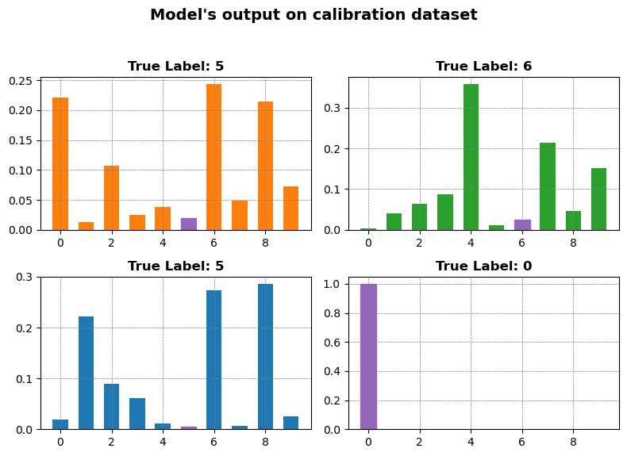
calib_true = calib_prediction_results[
np.arange(calib_prediction_results.shape[0]), calib_target_results
]From the above plot it is evident that most of the softmax outputs corresponding to the true label are either close to 1 or close to 0. Thus, once we find out the value corresponding to the threshold of the 0 peak in the plot. Any quantile value just above this will quickly go near the next peak as there is no distribution mass for the rest of the softmax outputs.
## Quantile value that we use to predict the prediction set
qhat_intuit = np.quantile(calib_true, 0.15) ## taking 15% quantile
qhat_intuit0.17026243805885327_This leads to the fact that 85% of examples have their true class softmax score above \(\hat{q}_{intuit}\)_
Sorting the test dataset according to std
stds_test = np.std(test_prediction_results, axis=1)
min_std_indices_test = np.argsort(stds_test)test_df_std = test_df.loc[min_std_indices_test]
test_df_std| 0 | 1 | 2 | 3 | 4 | 5 | 6 | 7 | 8 | 9 | Max | Max_idx | True_idx | |
|---|---|---|---|---|---|---|---|---|---|---|---|---|---|
| 1646 | 9.070086e-06 | 7.102170e-02 | 1.074573e-01 | 2.019677e-01 | 2.011996e-01 | 1.028181e-03 | 1.132987e-03 | 1.039726e-01 | 1.606203e-01 | 1.515905e-01 | 0.201968 | 3 | 8 |
| 1184 | 4.843292e-08 | 1.841913e-01 | 5.504493e-02 | 1.019774e-01 | 1.562013e-01 | 2.759257e-04 | 9.354739e-04 | 1.538243e-01 | 1.096576e-02 | 3.365835e-01 | 0.336583 | 9 | 7 |
| 3654 | 4.213768e-04 | 7.209036e-02 | 1.887893e-02 | 1.189776e-02 | 3.334404e-01 | 2.851049e-03 | 1.309165e-01 | 8.140079e-04 | 2.165484e-01 | 2.121412e-01 | 0.333440 | 4 | 5 |
| 3019 | 2.256842e-01 | 2.321515e-07 | 2.911193e-01 | 2.409384e-01 | 1.869016e-11 | 2.536230e-09 | 5.548395e-02 | 2.447040e-10 | 1.867739e-01 | 2.661302e-11 | 0.291119 | 2 | 5 |
| 4896 | 1.610583e-01 | 4.679085e-05 | 8.821968e-04 | 1.386619e-01 | 1.308930e-03 | 8.392150e-05 | 3.836229e-02 | 5.723350e-02 | 2.713310e-01 | 3.310311e-01 | 0.331031 | 9 | 5 |
| ... | ... | ... | ... | ... | ... | ... | ... | ... | ... | ... | ... | ... | ... |
| 3128 | 1.000000e+00 | 4.840718e-18 | 1.905646e-08 | 2.940498e-11 | 1.603996e-18 | 5.580763e-16 | 4.068423e-11 | 1.949603e-11 | 2.676126e-09 | 3.716259e-15 | 1.000000 | 0 | 0 |
| 4507 | 1.798757e-18 | 1.045387e-13 | 5.538239e-17 | 2.234547e-16 | 7.610493e-18 | 6.503045e-19 | 4.574509e-24 | 1.000000e+00 | 1.466630e-14 | 1.054316e-12 | 1.000000 | 7 | 7 |
| 3130 | 5.435448e-18 | 5.444775e-11 | 1.383103e-15 | 2.973889e-15 | 2.213195e-15 | 1.832753e-16 | 7.384352e-22 | 1.000000e+00 | 3.005146e-12 | 3.994342e-10 | 1.000000 | 7 | 7 |
| 3142 | 1.000000e+00 | 2.979347e-17 | 1.458575e-08 | 1.863164e-11 | 1.070295e-18 | 1.046285e-15 | 7.635514e-11 | 2.087787e-12 | 5.457018e-09 | 3.388109e-15 | 1.000000 | 0 | 0 |
| 3060 | 1.986817e-17 | 5.229983e-14 | 1.823637e-17 | 3.066719e-17 | 1.413327e-16 | 2.220211e-18 | 7.849721e-23 | 1.000000e+00 | 4.188006e-14 | 2.416875e-10 | 1.000000 | 7 | 7 |
5000 rows × 13 columns
## Forming prediction sets
y1 = test_prediction_results[min_std_indices_test[1]]
y2 = test_prediction_results[min_std_indices_test[2]]
y3 = test_prediction_results[min_std_indices_test[3]]
y4 = test_prediction_results[4500]
test_array_indices = [
min_std_indices_test[1],
min_std_indices_test[2],
min_std_indices_test[3],
4500,
]
x = np.arange(10)
# Create a new figure with 3 subplots
fig, axs = plt.subplots(2, 2, figsize=(10, 8))
# Add bar plots to the subplots
bars1 = axs[0, 0].bar(x, y1, color="#ff7f0e", width=0.6)
axs[0, 0].set_title(
f"True Label: {test_target_results[test_array_indices[0]]}",
fontsize=12,
fontweight="bold",
)
bars2 = axs[0, 1].bar(x, y2, color="#2ca02c", width=0.6)
axs[0, 1].set_title(
f"True Label: {test_target_results[test_array_indices[1]]}",
fontsize=12,
fontweight="bold",
)
bars3 = axs[1, 0].bar(x, y3, color="#1f77b4", width=0.6)
axs[1, 0].set_title(
f"True Label: {test_target_results[test_array_indices[2]]}",
fontsize=12,
fontweight="bold",
)
bars4 = axs[1, 1].bar(x, y4, color="#d62728", width=0.6)
axs[1, 1].set_title(
f"True Label: {test_target_results[test_array_indices[3]]}",
fontsize=12,
fontweight="bold",
)
# Add labels and title to the figure
fig.suptitle("Model's output on test dataset", fontsize=14, fontweight="bold")
for ax in axs.flat:
ax.grid(color="gray", linestyle="--", linewidth=0.5)
for ax in axs.flatten():
ax.axhline(y=qhat_intuit, color="black", linewidth=2)
# Fine-tune the subplot layout
fig.tight_layout(rect=[0, 0.03, 1, 0.95])
bars1_idx = y1 > qhat_intuit
bars2_idx = y2 > qhat_intuit
bars3_idx = y3 > qhat_intuit
bars4_idx = y4 > qhat_intuit
for i in range(10):
if bars1_idx[i]:
bars1[i].set_color("#8c564b")
if bars2_idx[i]:
bars2[i].set_color("#8c564b")
if bars3_idx[i]:
bars3[i].set_color("#8c564b")
if bars4_idx[i]:
bars4[i].set_color("#8c564b")
bars1[test_target_results[test_array_indices[0]]].set_color("#9467bd")
bars2[test_target_results[test_array_indices[1]]].set_color("#9467bd")
bars3[test_target_results[test_array_indices[2]]].set_color("#9467bd")
bars4[test_target_results[test_array_indices[3]]].set_color("#9467bd")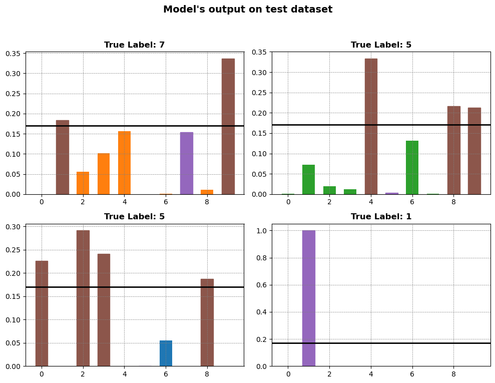
_All the bars above the \(\hat{q}_{intuit}\) are the part of the prediction set for the corresponding test dataset_
# Use numpy indexing to get the softmax scores for each image corresponding to their true labels
test_true = test_prediction_results[
np.arange(test_prediction_results.shape[0]), test_target_results
]Implementing conformal prediction using the General Method
1. Here the heuristic notion of uncertainity is softmax output
# Problem setup
n = 5000 # number of calibration points
alpha = 0.15 # 1-alpha is the desired coveragecal_scores = 1 - calib_true2. Defining the score function as: \(S(x,y)\) = \(1- softmax(x_i,y_i)\)
q_level = np.ceil((n + 1) * (1 - alpha)) / n ## alpha = 0.1, n = 1000, q_level = 0.901
qhat = np.quantile(
cal_scores, q_level
) ## value for which 90% of the scores are less than it
qhat0.83379270118474963. Calculating \(\hat{q}\)
4. Creating the prediction set
$ C(x) = {y:S(x,y) }$
fig = plt.figure()
for i in range(4):
plt.subplot(2, 2, i + 1)
plt.imshow(test_images[test_array_indices[i]][0], cmap="gray", interpolation="none")
test_scores = 1 - test_prediction_results[test_array_indices[i]]
prediction_set = test_scores < qhat
indices = []
for index, val in enumerate(prediction_set):
if val:
indices.append(index)
true_label = test_target_results[test_array_indices]
plt.title(f"Set: {indices} True:{true_label[i]}")
plt.xticks([])
plt.yticks([])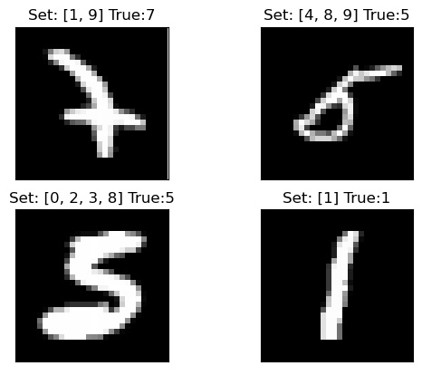
Insights and Summary:
Given an image \(x\) and label \(j\). Softmax measures \(P(Y = j | X = x)\). However, we have no guarantee that the softmax outputs are any good; they maybe arbitrarily overfit or otherwise untrustworthy. Thus, we use the holdout set to adjust for their deficiencies.
In the above example the holdout set contained 5000 examples that the model never saw during training which gives us an honest appraisal of its performance.
Here, the conformal score was 1 - softmax output of the true class. Then we took $ = 1 - $ quantile of the scores.
Using Step 3 at the test time, we got the softmax outputs of a new image \(X_{test}\) and collected all classes with outputs above $ 1 − $ into a prediction set \(C(X_{test})\)
Implementation using Imagenet
if not os.path.exists("../data"):
os.system("gdown 1h7S6N_Rx7gdfO3ZunzErZy6H7620EbZK -O ../data.tar.gz")
os.system("tar -xf ../data.tar.gz -C ../")
os.system("rm ../data.tar.gz")
if not os.path.exists("../data/imagenet/human_readable_labels.json"):
!wget -nv -O ../data/imagenet/human_readable_labels.json -L https://raw.githubusercontent.com/anishathalye/imagenet-simple-labels/master/imagenet-simple-labels.json
data = np.load("../data/imagenet/imagenet-resnet152.npz")
example_paths = os.listdir("../data/imagenet/examples")
smx = data["smx"]
labels = data["labels"].astype(int)# Problem setup
n = 1000 # number of calibration points
alpha = 0.1 # 1-alpha is the desired coverageidx = np.array([1] * n + [0] * (smx.shape[0] - n)) > 0
np.random.shuffle(idx)
cal_smx, val_smx = smx[idx, :], smx[~idx, :]
cal_labels, val_labels = labels[idx], labels[~idx]imagenet_calib_df = pd.DataFrame(cal_smx)
imagenet_calib_df| 0 | 1 | 2 | 3 | 4 | 5 | 6 | 7 | 8 | 9 | ... | 990 | 991 | 992 | 993 | 994 | 995 | 996 | 997 | 998 | 999 | |
|---|---|---|---|---|---|---|---|---|---|---|---|---|---|---|---|---|---|---|---|---|---|
| 0 | 9.646587e-01 | 1.350361e-05 | 2.151330e-07 | 1.699551e-06 | 2.384544e-06 | 1.646308e-06 | 1.394906e-07 | 2.117511e-08 | 3.057390e-09 | 4.086660e-10 | ... | 5.279725e-09 | 9.462966e-08 | 1.185813e-08 | 5.307772e-10 | 2.161666e-07 | 1.007043e-08 | 9.514928e-08 | 8.144019e-07 | 1.339111e-07 | 6.878381e-09 |
| 1 | 9.992527e-01 | 1.005275e-06 | 5.030975e-08 | 2.312540e-08 | 6.919812e-07 | 5.068674e-08 | 5.945228e-08 | 2.580266e-09 | 1.059923e-09 | 5.929557e-11 | ... | 3.178681e-10 | 3.120479e-09 | 2.160190e-09 | 6.229624e-10 | 3.004631e-08 | 2.982520e-10 | 3.827619e-08 | 2.310420e-07 | 9.114003e-08 | 6.513726e-10 |
| 2 | 9.998410e-01 | 2.081634e-08 | 2.163244e-09 | 1.033369e-08 | 9.947884e-09 | 4.689700e-09 | 4.500399e-09 | 4.603104e-11 | 2.665861e-11 | 4.032333e-12 | ... | 1.170430e-10 | 1.740400e-10 | 1.001514e-10 | 2.484425e-11 | 6.860166e-10 | 5.098253e-11 | 9.393597e-10 | 3.404014e-08 | 1.460277e-09 | 8.657306e-13 |
| 3 | 9.996231e-01 | 6.980400e-06 | 7.547856e-08 | 1.445374e-07 | 5.570853e-07 | 1.413495e-06 | 1.172659e-07 | 4.219434e-09 | 9.644072e-10 | 4.150972e-11 | ... | 1.467458e-09 | 1.727905e-08 | 4.188708e-08 | 8.764998e-10 | 3.017675e-08 | 1.152834e-09 | 2.212167e-08 | 5.312061e-07 | 7.742039e-09 | 6.035842e-10 |
| 4 | 3.740840e-07 | 9.997242e-01 | 6.791072e-10 | 4.707819e-09 | 3.942747e-09 | 3.235905e-07 | 1.922253e-08 | 7.563041e-09 | 4.848560e-09 | 1.836324e-11 | ... | 1.428742e-09 | 2.168828e-09 | 7.591582e-10 | 7.432400e-11 | 8.145293e-10 | 6.436701e-10 | 6.601004e-10 | 2.608228e-10 | 1.372821e-09 | 1.686885e-07 |
| ... | ... | ... | ... | ... | ... | ... | ... | ... | ... | ... | ... | ... | ... | ... | ... | ... | ... | ... | ... | ... | ... |
| 995 | 1.338609e-13 | 2.481204e-13 | 2.981873e-12 | 2.992094e-12 | 8.025680e-13 | 1.196738e-12 | 1.058158e-12 | 1.031028e-14 | 8.366420e-14 | 1.834110e-16 | ... | 2.835526e-10 | 1.185883e-09 | 5.707088e-11 | 1.053065e-10 | 6.115803e-09 | 1.000000e+00 | 6.104551e-11 | 3.662891e-10 | 2.519912e-13 | 1.617798e-11 |
| 996 | 1.461727e-05 | 2.962031e-05 | 2.201413e-07 | 3.813796e-08 | 1.196295e-07 | 3.246882e-07 | 2.723306e-06 | 2.824044e-06 | 9.639041e-06 | 2.289236e-05 | ... | 2.566843e-02 | 1.156482e-01 | 1.163806e-03 | 6.741311e-03 | 1.174134e-03 | 1.015575e-03 | 4.271199e-01 | 3.027194e-01 | 3.415058e-04 | 8.422194e-07 |
| 997 | 3.484188e-06 | 1.047919e-07 | 7.475886e-08 | 3.465406e-07 | 1.347377e-06 | 4.767327e-06 | 4.182576e-08 | 4.709841e-08 | 1.508235e-08 | 1.065061e-08 | ... | 2.632773e-06 | 2.174731e-05 | 3.774206e-04 | 1.449335e-04 | 8.616778e-01 | 8.140442e-05 | 1.180090e-04 | 1.335993e-01 | 7.427732e-06 | 3.561391e-08 |
| 998 | 7.082336e-04 | 2.196637e-05 | 1.516250e-05 | 7.714512e-04 | 1.190577e-01 | 5.289520e-02 | 3.330159e-04 | 1.690781e-07 | 1.402206e-06 | 4.881958e-08 | ... | 1.218608e-05 | 2.880947e-03 | 5.116140e-04 | 1.090989e-01 | 8.638866e-03 | 3.532250e-02 | 1.301925e-02 | 5.380661e-01 | 1.777594e-05 | 4.036425e-07 |
| 999 | 4.129702e-14 | 2.889617e-12 | 2.798768e-13 | 4.931771e-13 | 2.598153e-12 | 9.916586e-14 | 3.006582e-13 | 8.608723e-12 | 2.060572e-12 | 5.938183e-13 | ... | 1.010096e-11 | 1.221625e-11 | 2.120370e-11 | 2.549839e-13 | 5.645862e-10 | 5.007978e-11 | 3.019627e-10 | 1.544346e-11 | 1.280130e-11 | 9.915479e-01 |
1000 rows × 1000 columns
Adaptive Prediction Sets
In comparison to the earlier method:
- This method will have a larger predictive set size.
- Much more adaptive (\(i.e.\) Larger set size for hard examples and small set size for easy examples).
- The earlier method used the softmax value corresponding to only the true class of the output.
Implementation
if not os.path.exists("../data"):
os.system("gdown 1h7S6N_Rx7gdfO3ZunzErZy6H7620EbZK -O ../data.tar.gz")
os.system("tar -xf ../data.tar.gz -C ../")
os.system("rm ../data.tar.gz")
if not os.path.exists("../data/imagenet/human_readable_labels.json"):
!wget -nv -O ../data/imagenet/human_readable_labels.json -L https://raw.githubusercontent.com/anishathalye/imagenet-simple-labels/master/imagenet-simple-labels.json
data = np.load("../data/imagenet/imagenet-resnet152.npz")
example_paths = os.listdir("../data/imagenet/examples")
smx = data["smx"]
labels = data["labels"].astype(int)# Problem setup
n = 1000 # number of calibration points
alpha = 0.1 # 1-alpha is the desired coverageidx = np.array([1] * n + [0] * (smx.shape[0] - n)) > 0
np.random.shuffle(idx)
cal_smx, val_smx = smx[idx, :], smx[~idx, :]
cal_labels, val_labels = labels[idx], labels[~idx]cal_pi = cal_smx.argsort(1)[
:, ::-1
] ## sorting the cal_smx in descending order and storing the indices in cal_pi
cal_srt = np.take_along_axis(cal_smx, cal_pi, axis=1).cumsum(
axis=1
) ## take the elements of 'cal_smx' corresponding to the indices in 'cal_pi' and take the cumulative sum along each row
cal_scores = np.take_along_axis(cal_srt, cal_pi.argsort(axis=1), axis=1)[
range(n), cal_labels
] ## take the elements of 'cal_srt' corresponding to the indices of the sorted 'cal_pi' and select the score corresponding to the 'cal_labels'example = np.array(
[
[3, 4, 2, 1, 6],
[5, 4, 6, 7, 3],
[9, 5, 4, 3, 7],
[5, 4, 3, 7, 8],
[0, 3, 2, 1, 6],
]
)
example_labels = np.array([2, 3, 1, 4, 2])
example_pi = example.argsort(1)[:, ::-1]
print(example_pi)
example_srt = np.take_along_axis(example, example_pi, axis=1).cumsum(axis=1)
print(example_srt)
example_scores = np.take_along_axis(example_srt, example_pi.argsort(axis=1), axis=1)
print(example_scores)
example_scores[range(5), example_labels][[4 1 0 2 3]
[3 2 0 1 4]
[0 4 1 2 3]
[4 3 0 1 2]
[4 1 2 3 0]]
[[ 6 10 13 15 16]
[ 7 13 18 22 25]
[ 9 16 21 25 28]
[ 8 15 20 24 27]
[ 6 9 11 12 12]]
[[13 10 15 16 6]
[18 22 13 7 25]
[ 9 21 25 28 16]
[20 24 27 15 8]
[12 9 11 12 6]]array([15, 7, 21, 8, 11])# example = np.array([[3,4,2,1,6],[5,4,6,7,3],[9,5,4,3,7],[5,4,3,7,8],[0,3,2,1,6]])
# example_pi = example.sort()
# print(example_pi)1. The softmax output corresponding to an image is sorted in decreasing order. Then we consider the \(E_i\) as the total mass of the softmax function for a particular label until we reach the true label.
# Get the score quantile
qhat = np.quantile(cal_scores, np.ceil((n + 1) * (1 - alpha)) / n)
qhat0.99987947583198542. Calculating the quantile value \(\hat{q}\)
# Deploy (output=list of length n, each element is tensor of classes)
val_pi = val_smx.argsort(1)[:, ::-1]
val_srt = np.take_along_axis(val_smx, val_pi, axis=1).cumsum(axis=1)
prediction_sets = np.take_along_axis(val_srt <= qhat, val_pi.argsort(axis=1), axis=1)eg = np.array([7, 5, 4, 3, 2, 1, 4, 3, 6, 7])
eg_pi = eg.argsort()[::-1]
eg_srt = np.take_along_axis(eg, eg_pi, axis=0).cumsum()
p_set = np.take_along_axis(eg_srt <= 0.8, eg_pi.argsort(), axis=0)img = smx[1][0:10]
img_pi = img.argsort()[::-1]
img_srt = np.take_along_axis(img, img_pi, axis=0).cumsum()
prediction_set = np.take_along_axis(img_srt <= qhat, img_pi.argsort(), axis=0)
print(img_pi, img, img_srt, prediction_set)[0 1 4 3 5 2 6 7 8 9] [9.64658678e-01 1.35036071e-05 2.15132957e-07 1.69955081e-06
2.38454436e-06 1.64630808e-06 1.39490609e-07 2.11751061e-08
3.05739034e-09 4.08666018e-10] [0.96465868 0.96467218 0.96467457 0.96467627 0.96467791 0.96467813
0.96467827 0.96467829 0.96467829 0.96467829] [ True True True True True True True True True True]with open("../data/imagenet/human_readable_labels.json") as f:
label_strings = np.array(json.load(f))
example_paths = os.listdir("../data/imagenet/examples")
for i in range(10):
rand_path = np.random.choice(example_paths)
img = imread("../data/imagenet/examples/" + rand_path)
img_index = int(rand_path.split(".")[0])
img_pi = smx[img_index].argsort()[::-1]
img_srt = np.take_along_axis(smx[img_index], img_pi, axis=0).cumsum()
prediction_set = np.take_along_axis(img_srt <= qhat, img_pi.argsort(), axis=0)
plt.figure()
plt.imshow(img)
plt.axis("off")
plt.show()
print(f"The prediction set is: {list(label_strings[prediction_set])}")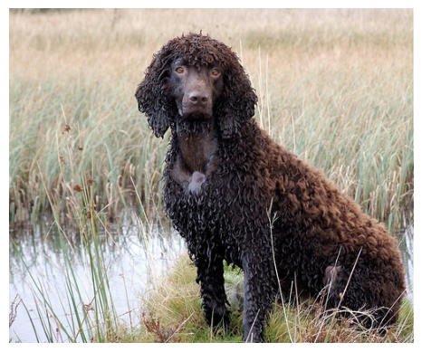
The prediction set is: ['prairie grouse', 'partridge', 'Afghan Hound', 'Otterhound', 'Bedlington Terrier', 'Kerry Blue Terrier', 'Giant Schnauzer', 'Flat-Coated Retriever', 'Curly-coated Retriever', 'Chesapeake Bay Retriever', 'German Shorthaired Pointer', 'Vizsla', 'Irish Setter', 'Gordon Setter', 'Brittany', 'Clumber Spaniel', 'English Springer Spaniel', 'Welsh Springer Spaniel', 'Cocker Spaniels', 'Sussex Spaniel', 'Irish Water Spaniel', 'Australian Kelpie', 'Komondor', 'Newfoundland', 'Toy Poodle', 'Miniature Poodle', 'Standard Poodle', 'hyena', 'leopard', 'cheetah', 'brown bear', 'American black bear', 'mongoose', 'wild boar', 'bison', 'ram', 'llama', 'weasel', 'mink', 'guenon', 'baboon', 'honeycomb', 'jeep', 'wig', 'acorn', 'gyromitra']
The prediction set is: ['Otterhound', 'Border Terrier', 'Norfolk Terrier', 'Norwich Terrier', 'Yorkshire Terrier', 'Wire Fox Terrier', 'Lakeland Terrier', 'Airedale Terrier', 'Cairn Terrier', 'Australian Terrier', 'Dandie Dinmont Terrier', 'Miniature Schnauzer', 'Standard Schnauzer', 'Scottish Terrier', 'Australian Silky Terrier', 'German Shepherd Dog']
The prediction set is: ['goldfish', 'tiger shark', 'cock', 'house finch', 'agama', 'triceratops', 'ring-necked snake', 'sea snake', 'southern black widow', 'centipede', 'black grouse', 'prairie grouse', 'grey parrot', 'macaw', 'lorikeet', 'hornbill', 'hummingbird', 'toucan', 'flatworm', 'nematode', 'sea slug', 'fiddler crab', 'American lobster', 'spiny lobster', 'crayfish', 'hermit crab', 'isopod', 'crane (bird)', 'oystercatcher', 'Bloodhound', 'Miniature Schnauzer', 'Giant Schnauzer', 'Standard Schnauzer', 'Labrador Retriever', 'English Setter', 'Gordon Setter', 'Brittany', 'Cocker Spaniels', 'Sussex Spaniel', 'Rottweiler', 'Greater Swiss Mountain Dog', 'Dalmatian', 'cougar', 'tiger', 'polar bear', 'mongoose', 'ladybug', 'stick insect', 'cockroach', 'leafhopper', 'damselfly', 'red admiral', 'gossamer-winged butterfly', 'sea cucumber', 'hamster', 'beaver', 'guinea pig', 'pig', 'weasel', 'mink', 'European polecat', 'black-footed ferret', 'skunk', 'badger', 'macaque', 'marmoset', 'red panda', 'eel', 'coho salmon', 'rock beauty', 'clownfish', 'sturgeon', 'garfish', 'lionfish', 'aircraft carrier', 'airliner', 'airship', 'ambulance', 'amphibious vehicle', 'analog clock', 'apiary', 'waste container', 'assault rifle', 'backpack', 'balance beam', 'balloon', 'Band-Aid', 'baluster', 'barber chair', 'barbershop', 'barometer', 'barrel', 'wheelbarrow', 'baseball', 'swimming cap', 'bathtub', 'station wagon', 'lighthouse', 'beaker', 'beer bottle', 'binoculars', 'birdhouse', 'boathouse', 'bolo tie', 'bottle cap', 'breakwater', 'broom', 'buckle', 'bulletproof vest', 'high-speed train', 'taxicab', 'cannon', 'canoe', 'can opener', 'car mirror', 'carousel', 'tool kit', 'car wheel', 'automated teller machine', 'cassette', 'cassette player', 'catamaran', 'CD player', 'mobile phone', 'chain', 'chain-link fence', 'chainsaw', 'movie theater', 'coffeemaker', 'computer keyboard', 'container ship', 'convertible', 'cowboy hat', 'crane (machine)', 'crash helmet', 'crate', 'crutch', 'dam', 'desk', 'desktop computer', 'rotary dial telephone', 'digital clock', 'digital watch', 'dishwasher', 'disc brake', 'dock', 'dog sled', 'drilling rig', 'dumbbell', 'Dutch oven', 'electric fan', 'electric locomotive', 'envelope', 'feather boa', 'fireboat', 'fire engine', 'football helmet', 'forklift', 'freight car', 'frying pan', 'garbage truck', 'gas mask', 'gas pump', 'go-kart', 'golf ball', 'golf cart', 'grille', 'grocery store', 'guillotine', 'barrette', 'half-track', 'hammer', 'hand-held computer', 'hard disk drive', 'harvester', 'hatchet', 'holster', 'honeycomb', 'hook', 'horizontal bar', 'horse-drawn vehicle', "jack-o'-lantern", 'jeep', 'jigsaw puzzle', 'pulled rickshaw', 'joystick', 'knot', 'lab coat', 'ladle', 'laptop computer', 'lawn mower', 'lifeboat', 'lighter', 'limousine', 'ocean liner', 'speaker', 'sawmill', 'magnetic compass', 'mailbox', 'manhole cover', 'match', 'maze', 'medicine chest', 'microwave oven', 'military uniform', 'milk can', 'minibus', 'minivan', 'missile', 'mobile home', 'Model T', 'modem', 'monitor', 'moped', 'mortar', 'scooter', 'mountain bike', 'tent', 'computer mouse', 'mousetrap', 'moving van', 'neck brace', 'odometer', 'oil filter', 'oscilloscope', 'bullock cart', 'oxygen mask', 'packet', 'paddle wheel', 'padlock', 'paintbrush', 'parachute', 'parking meter', 'passenger car', 'payphone', 'pencil case', 'pencil sharpener', 'Petri dish', 'photocopier', 'picket fence', 'pickup truck', 'pier', 'pill bottle', 'ping-pong ball', 'hand plane', 'plow', 'plunger', 'Polaroid camera', 'pole', 'police van', 'soda bottle', 'power drill', 'printer', 'projectile', 'projector', 'hockey puck', 'punching bag', 'race car', 'radiator', 'radio', 'radio telescope', 'rain barrel', 'recreational vehicle', 'reflex camera', 'refrigerator', 'remote control', 'restaurant', 'revolver', 'rifle', 'rotisserie', 'eraser', 'ruler', 'running shoe', 'safe', 'sandal', 'weighing scale', 'school bus', 'scoreboard', 'CRT screen', 'screw', 'screwdriver', 'seat belt', 'sewing machine', 'shopping cart', 'shovel', 'ski', 'sleeping bag', 'slide rule', 'sliding door', 'slot machine', 'snorkel', 'snowmobile', 'snowplow', 'solar thermal collector', 'space bar', 'space heater', 'space shuttle', 'motorboat', 'sports car', 'spotlight', 'steam locomotive', 'through arch bridge', 'stopwatch', 'stove', 'strainer', 'tram', 'stretcher', 'suspension bridge', 'mop', 'swing', 'switch', 'syringe', 'tank', 'tape player', 'television', 'threshing machine', 'tile roof', 'toaster', 'toilet seat', 'torch', 'totem pole', 'tow truck', 'toy store', 'tractor', 'semi-trailer truck', 'tray', 'trimaran', 'trolleybus', 'tub', 'turnstile', 'typewriter keyboard', 'viaduct', 'wall clock', 'military aircraft', 'sink', 'washing machine', 'water bottle', 'water tower', 'whistle', 'wing', 'shipwreck', 'yurt', 'website', 'traffic sign', 'traffic light', 'dust jacket', 'ice pop', 'hot dog', 'spaghetti squash', 'acorn squash', 'butternut squash', 'cucumber', 'hay', 'meatloaf', 'burrito', 'alp', 'bubble', 'cliff', 'coral reef', 'volcano', 'baseball player', 'scuba diver', 'rapeseed', 'corn', 'coral fungus', 'agaric', 'stinkhorn mushroom', 'ear']
The prediction set is: ['alligator lizard', 'trilobite', 'scorpion', 'tick', 'centipede', 'conch', 'snail', 'chiton', 'crayfish', 'hermit crab', 'isopod', 'ground beetle', 'weevil', 'cockroach', 'cicada', 'sea cucumber', 'armadillo', 'corn']
The prediction set is: ['tench', 'great white shark', 'tiger shark', 'hammerhead shark', 'electric ray', 'stingray', 'cock', 'hen', 'house finch', 'junco', 'indigo bunting', 'vulture', 'spotted salamander', 'loggerhead sea turtle', 'leatherback sea turtle', 'green iguana', 'desert grassland whiptail lizard', 'frilled-necked lizard', 'Gila monster', 'European green lizard', 'triceratops', 'eastern hog-nosed snake', 'kingsnake', 'vine snake', 'night snake', 'boa constrictor', 'harvestman', 'scorpion', 'yellow garden spider', 'barn spider', 'European garden spider', 'southern black widow', 'tarantula', 'tick', 'centipede', 'black grouse', 'ruffed grouse', 'prairie grouse', 'partridge', 'grey parrot', 'macaw', 'sulphur-crested cockatoo', 'coucal', 'hornbill', 'toucan', 'tusker', 'echidna', 'wombat', 'jellyfish', 'sea anemone', 'flatworm', 'conch', 'slug', 'chambered nautilus', 'Dungeness crab', 'rock crab', 'red king crab', 'American lobster', 'spiny lobster', 'crayfish', 'hermit crab', 'isopod', 'American coot', 'dunlin', 'king penguin', 'albatross', 'grey whale', 'killer whale', 'dugong', 'sea lion', 'Chihuahua', 'Japanese Chin', 'Maltese', 'Pekingese', 'Shih Tzu', 'King Charles Spaniel', 'toy terrier', 'Rhodesian Ridgeback', 'Afghan Hound', 'Basset Hound', 'Beagle', 'Bloodhound', 'Bluetick Coonhound', 'Black and Tan Coonhound', 'Treeing Walker Coonhound', 'English foxhound', 'Redbone Coonhound', 'borzoi', 'Italian Greyhound', 'Weimaraner', 'Staffordshire Bull Terrier', 'American Staffordshire Terrier', 'Bedlington Terrier', 'Kerry Blue Terrier', 'Irish Terrier', 'Norfolk Terrier', 'Norwich Terrier', 'Yorkshire Terrier', 'Lakeland Terrier', 'Sealyham Terrier', 'Cairn Terrier', 'Australian Terrier', 'Dandie Dinmont Terrier', 'Boston Terrier', 'Miniature Schnauzer', 'Giant Schnauzer', 'Scottish Terrier', 'Tibetan Terrier', 'Australian Silky Terrier', 'Soft-coated Wheaten Terrier', 'West Highland White Terrier', 'Lhasa Apso', 'Flat-Coated Retriever', 'Curly-coated Retriever', 'Golden Retriever', 'Labrador Retriever', 'Chesapeake Bay Retriever', 'German Shorthaired Pointer', 'Vizsla', 'Gordon Setter', 'Brittany', 'Clumber Spaniel', 'English Springer Spaniel', 'Cocker Spaniels', 'Sussex Spaniel', 'Irish Water Spaniel', 'Kuvasz', 'Schipperke', 'Groenendael', 'Briard', 'Australian Kelpie', 'Komondor', 'Old English Sheepdog', 'Bouvier des Flandres', 'Rottweiler', 'German Shepherd Dog', 'Dobermann', 'Miniature Pinscher', 'Greater Swiss Mountain Dog', 'Bernese Mountain Dog', 'Appenzeller Sennenhund', 'Entlebucher Sennenhund', 'Boxer', 'Bullmastiff', 'Tibetan Mastiff', 'French Bulldog', 'Great Dane', 'husky', 'Alaskan Malamute', 'Siberian Husky', 'Dalmatian', 'Affenpinscher', 'Basenji', 'pug', 'Leonberger', 'Newfoundland', 'Pyrenean Mountain Dog', 'Samoyed', 'Pomeranian', 'Chow Chow', 'Griffon Bruxellois', 'Pembroke Welsh Corgi', 'Toy Poodle', 'Miniature Poodle', 'Standard Poodle', 'Mexican hairless dog', 'Alaskan tundra wolf', 'tabby cat', 'tiger cat', 'Persian cat', 'Siamese cat', 'Egyptian Mau', 'leopard', 'American black bear', 'ground beetle', 'rhinoceros beetle', 'grasshopper', 'cricket', 'stick insect', 'cockroach', 'mantis', 'ringlet', 'monarch butterfly', 'starfish', 'sea urchin', 'cottontail rabbit', 'Angora rabbit', 'hamster', 'porcupine', 'beaver', 'common sorrel', 'zebra', 'hippopotamus', 'ox', 'water buffalo', 'weasel', 'mink', 'European polecat', 'black-footed ferret', 'armadillo', 'gibbon', 'Asian elephant', 'African bush elephant', 'snoek', 'eel', 'coho salmon', 'rock beauty', 'sturgeon', 'garfish', 'lionfish', 'abacus', 'abaya', 'academic gown', 'accordion', 'acoustic guitar', 'aircraft carrier', 'airship', 'altar', 'ambulance', 'analog clock', 'apron', 'waste container', 'assault rifle', 'backpack', 'bakery', 'balloon', 'Band-Aid', 'banjo', 'baluster', 'barbell', 'barber chair', 'barbershop', 'barometer', 'barrel', 'baseball', 'basketball', 'bassinet', 'bassoon', 'swimming cap', 'bath towel', 'bathtub', 'station wagon', 'lighthouse', 'beaker', 'military cap', 'beer bottle', 'beer glass', 'bell-cot', 'bib', 'tandem bicycle', 'bikini', 'ring binder', 'binoculars', 'bobsleigh', 'bolo tie', 'poke bonnet', 'bookcase', 'bookstore', 'bow', 'bow tie', 'brass', 'bra', 'breastplate', 'broom', 'bucket', 'buckle', 'bulletproof vest', 'high-speed train', 'butcher shop', 'taxicab', 'cauldron', 'candle', 'cannon', 'can opener', 'cardigan', 'car mirror', 'carousel', 'tool kit', 'carton', 'car wheel', 'automated teller machine', 'cassette', 'cassette player', 'CD player', 'cello', 'mobile phone', 'chain', 'chain mail', 'chainsaw', 'chest', 'chiffonier', 'chime', 'china cabinet', 'Christmas stocking', 'church', 'movie theater', 'cleaver', 'cliff dwelling', 'cloak', 'clogs', 'cocktail shaker', 'coffee mug', 'coffeemaker', 'coil', 'combination lock', 'computer keyboard', 'confectionery store', 'convertible', 'corkscrew', 'cornet', 'cowboy boot', 'cowboy hat', 'cradle', 'crane (machine)', 'crash helmet', 'crate', 'infant bed', 'Crock Pot', 'croquet ball', 'crutch', 'cuirass', 'dam', 'desk', 'desktop computer', 'rotary dial telephone', 'diaper', 'digital clock', 'digital watch', 'dining table', 'dishcloth', 'dishwasher', 'disc brake', 'dock', 'dome', 'doormat', 'drilling rig', 'drum', 'drumstick', 'dumbbell', 'Dutch oven', 'electric fan', 'electric guitar', 'envelope', 'espresso machine', 'face powder', 'feather boa', 'filing cabinet', 'fireboat', 'fire screen sheet', 'flagpole', 'flute', 'folding chair', 'football helmet', 'forklift', 'fountain', 'fountain pen', 'four-poster bed', 'freight car', 'French horn', 'frying pan', 'fur coat', 'gas mask', 'gas pump', 'goblet', 'golf ball', 'golf cart', 'gondola', 'gong', 'gown', 'grand piano', 'grille', 'grocery store', 'guillotine', 'barrette', 'hair spray', 'hammer', 'hamper', 'hair dryer', 'hand-held computer', 'handkerchief', 'harmonica', 'harp', 'hatchet', 'holster', 'home theater', 'hook', 'hoop skirt', 'horizontal bar', 'hourglass', 'iPod', 'clothes iron', "jack-o'-lantern", 'jeans', 'T-shirt', 'pulled rickshaw', 'joystick', 'kimono', 'knee pad', 'knot', 'lab coat', 'ladle', 'lampshade', 'laptop computer', 'lens cap', 'library', 'limousine', 'ocean liner', 'lipstick', 'slip-on shoe', 'lotion', 'speaker', 'sawmill', 'magnetic compass', 'mail bag', 'mailbox', 'tights', 'tank suit', 'manhole cover', 'maraca', 'marimba', 'mask', 'match', 'maypole', 'maze', 'medicine chest', 'megalith', 'microphone', 'microwave oven', 'military uniform', 'milk can', 'minibus', 'miniskirt', 'minivan', 'missile', 'mitten', 'mobile home', 'Model T', 'modem', 'monastery', 'monitor', 'square academic cap', 'mosque', 'mosquito net', 'scooter', 'mountain bike', 'tent', 'mousetrap', 'moving van', 'muzzle', 'nail', 'neck brace', 'necklace', 'nipple', 'notebook computer', 'obelisk', 'oboe', 'ocarina', 'oil filter', 'organ', 'oscilloscope', 'overskirt', 'oxygen mask', 'packet', 'paddle', 'padlock', 'paintbrush', 'pajamas', 'palace', 'pan flute', 'paper towel', 'parachute', 'parallel bars', 'park bench', 'passenger car', 'patio', 'payphone', 'pedestal', 'pencil case', 'pencil sharpener', 'perfume', 'Petri dish', 'photocopier', 'plectrum', 'Pickelhaube', 'picket fence', 'pier', 'piggy bank', 'pill bottle', 'pillow', 'ping-pong ball', 'pirate ship', 'pitcher', 'planetarium', 'plastic bag', 'plate rack', 'plunger', 'Polaroid camera', 'pole', 'poncho', 'billiard table', 'soda bottle', 'pot', "potter's wheel", 'power drill', 'prayer rug', 'printer', 'prison', 'projectile', 'projector', 'punching bag', 'purse', 'quill', 'quilt', 'race car', 'racket', 'radiator', 'radio', 'radio telescope', 'rain barrel', 'recreational vehicle', 'reel', 'reflex camera', 'refrigerator', 'remote control', 'restaurant', 'revolver', 'rifle', 'rocking chair', 'rotisserie', 'rugby ball', 'ruler', 'running shoe', 'safe', 'safety pin', 'salt shaker', 'sandal', 'sarong', 'saxophone', 'scabbard', 'weighing scale', 'school bus', 'schooner', 'CRT screen', 'screw', 'screwdriver', 'seat belt', 'sewing machine', 'shield', 'shoe store', 'shoji', 'shopping basket', 'shopping cart', 'shovel', 'shower cap', 'shower curtain', 'ski mask', 'sleeping bag', 'sliding door', 'slot machine', 'snorkel', 'soap dispenser', 'soccer ball', 'sock', 'solar thermal collector', 'sombrero', 'space bar', 'space heater', 'space shuttle', 'spatula', 'spider web', 'spindle', 'sports car', 'spotlight', 'stage', 'through arch bridge', 'steel drum', 'stethoscope', 'scarf', 'stopwatch', 'stove', 'strainer', 'tram', 'stretcher', 'couch', 'stupa', 'submarine', 'suit', 'sundial', 'sunglass', 'sunglasses', 'sunscreen', 'suspension bridge', 'mop', 'sweatshirt', 'swimsuit', 'swing', 'switch', 'syringe', 'table lamp', 'tape player', 'teapot', 'teddy bear', 'television', 'tennis ball', 'front curtain', 'thimble', 'throne', 'tile roof', 'toaster', 'tobacco shop', 'toilet seat', 'torch', 'totem pole', 'toy store', 'semi-trailer truck', 'tray', 'trench coat', 'tricycle', 'trimaran', 'tripod', 'trombone', 'tub', 'turnstile', 'typewriter keyboard', 'umbrella', 'unicycle', 'upright piano', 'vacuum cleaner', 'vase', 'vault', 'velvet', 'vending machine', 'vestment', 'violin', 'waffle iron', 'wall clock', 'wallet', 'wardrobe', 'military aircraft', 'sink', 'washing machine', 'water bottle', 'water jug', 'water tower', 'whiskey jug', 'whistle', 'wig', 'window screen', 'window shade', 'Windsor tie', 'wine bottle', 'wing', 'wok', 'wooden spoon', 'wool', 'split-rail fence', 'yawl', 'yurt', 'website', 'comic book', 'crossword', 'traffic sign', 'traffic light', 'dust jacket', 'menu', 'plate', 'consomme', 'hot pot', 'ice pop', 'pretzel', 'hot dog', 'cabbage', 'zucchini', 'butternut squash', 'cucumber', 'mushroom', 'orange', 'pineapple', 'banana', 'jackfruit', 'custard apple', 'chocolate syrup', 'dough', 'pizza', 'pot pie', 'burrito', 'red wine', 'espresso', 'cup', 'bubble', 'cliff', 'coral reef', 'geyser', 'lakeshore', 'promontory', 'shoal', 'seashore', 'valley', 'volcano', 'baseball player', 'bridegroom', 'scuba diver', "yellow lady's slipper", 'corn', 'coral fungus', 'agaric', 'gyromitra', 'earth star', 'hen-of-the-woods', 'bolete', 'toilet paper']
The prediction set is: []
The prediction set is: ['tennis ball']
The prediction set is: []
The prediction set is: ['jay', 'tick', 'grey parrot', 'macaw', 'slug', 'common gallinule', 'Pekingese', 'Shih Tzu', 'Papillon', 'West Highland White Terrier', 'Shetland Sheepdog', 'collie', 'rhinoceros beetle', 'dragonfly', 'damselfly', 'sea urchin', 'accordion', 'analog clock', 'backpack', 'ballpoint pen', 'Band-Aid', 'bassoon', 'beaker', 'bib', 'ring binder', 'bolo tie', 'bookcase', 'bookstore', 'bow', 'bow tie', 'broom', 'bucket', 'buckle', 'cauldron', 'candle', 'can opener', 'tool kit', 'carton', 'cassette', 'cassette player', 'CD player', 'mobile phone', 'chain', 'chime', 'Christmas stocking', 'cloak', 'coffee mug', 'coil', 'computer keyboard', 'croquet ball', 'crutch', 'desk', 'digital clock', 'digital watch', 'dishcloth', 'drum', 'drumstick', 'electric guitar', 'envelope', 'face powder', 'feather boa', 'filing cabinet', 'flute', 'fountain pen', 'grand piano', 'barrette', 'hair spray', 'hammer', 'hand-held computer', 'handkerchief', 'hard disk drive', 'harmonica', 'hook', 'iPod', 'jeans', 'jigsaw puzzle', 'knot', 'lab coat', 'ladle', 'laptop computer', 'lens cap', 'paper knife', 'library', 'lighter', 'lipstick', 'lotion', 'loupe', 'mail bag', 'maraca', 'marimba', 'mask', 'match', 'maypole', 'medicine chest', 'microphone', 'mitten', 'modem', 'square academic cap', 'computer mouse', 'nail', 'necklace', 'nipple', 'oboe', 'ocarina', 'oil filter', 'organ', 'oscilloscope', 'packet', 'paintbrush', 'pan flute', 'paper towel', 'pencil case', 'pencil sharpener', 'perfume', 'plectrum', 'pinwheel', 'plunger', 'pole', 'pot', 'printer', 'purse', 'quill', 'racket', 'radio', 'reel', 'remote control', 'revolver', 'rifle', 'eraser', 'ruler', 'safety pin', 'scabbard', 'screw', 'screwdriver', 'shovel', 'ski', 'slide rule', 'snorkel', 'sock', 'sombrero', 'soup bowl', 'spatula', 'spindle', 'steel drum', 'stethoscope', 'scarf', 'strainer', 'sunglass', 'sunglasses', 'sunscreen', 'mop', 'switch', 'syringe', 'tape player', 'tennis ball', 'thimble', 'torch', 'tray', 'tripod', 'umbrella', 'velvet', 'violin', 'wall clock', 'wallet', 'water bottle', 'whistle', 'wig', 'wooden spoon', 'wool', 'comic book', 'crossword', 'dust jacket', 'ice pop', 'toilet paper']
The prediction set is: ['grey parrot', 'macaw', 'lorikeet']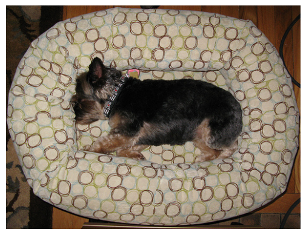
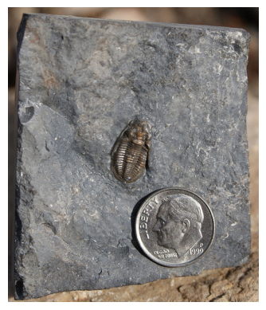
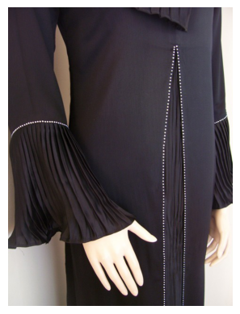
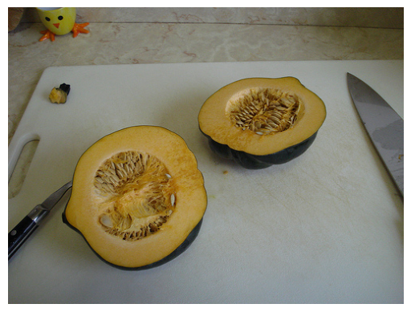
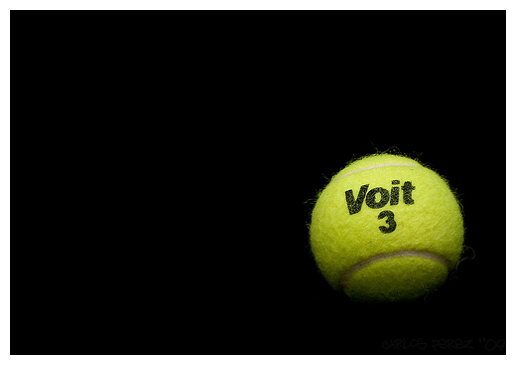
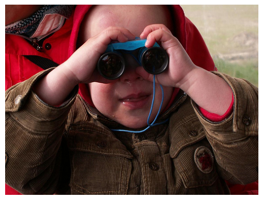
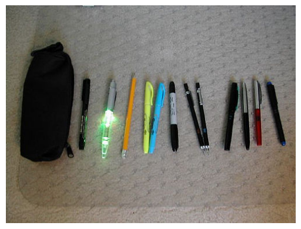